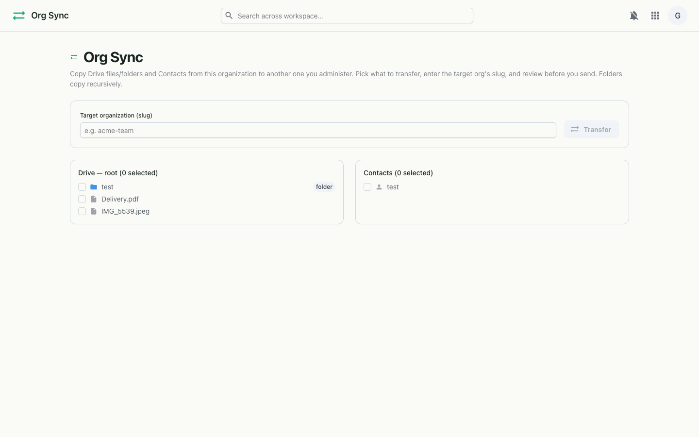

Move data between organizations you run — copy Drive files, folders and Contacts from one org to another, recursively and admin-gated.
Org Sync copies selected Drive files and folders and selected Contacts from your current organization into another organization you administer, identified by its slug. Pick what to transfer, name the target, review, and send — folders copy recursively, bringing their whole contents across. Because it can read one org and write another, it's gated to admins of both.

acme-team).Org Sync lists your current org's Drive root and Contacts so you can choose what to copy, then posts your selection and the target slug to the transfer endpoint. The server, having confirmed you administer both orgs, copies the chosen files (recursing into folders) and contacts into the target and reports back how much landed.